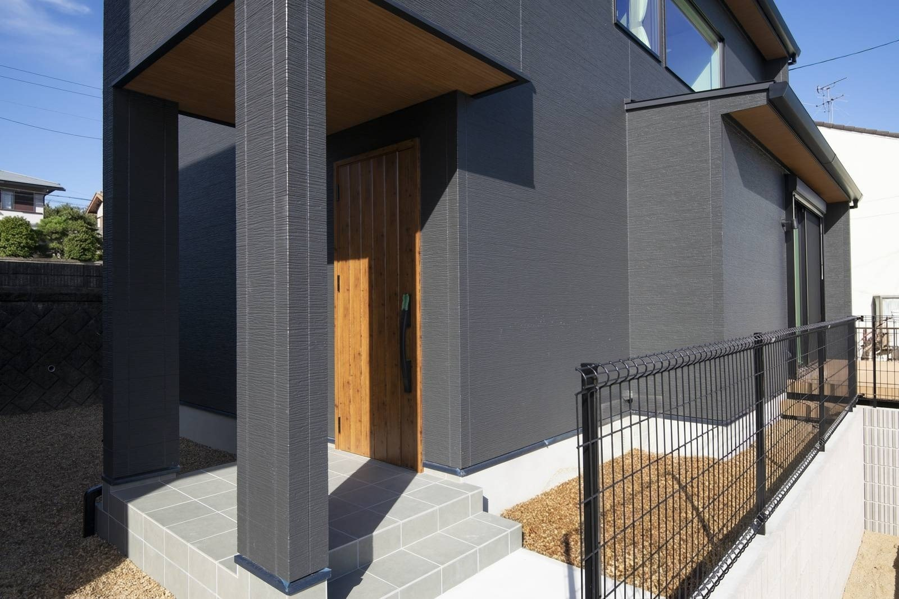

建物の見積もりが出て、ひと安心。
そのあとに「外構は別です」と言われて、もう一度電卓を叩く。
この順番でつまずく方が、とても多いのです。

この面積を土のままにするか仕上げるかで、金額は数十万円動きます。
外構というのは、建物の外まわり一式のことです。
駐車場、玄関までの通り道、フェンス、門柱とポスト、庭。
住みはじめてから毎日さわる場所ばかりです。
それなのに、資金計画のいちばん最後に回されます。
そして、残った金額でやりくりすることになります。
外構の費用は、いくらかかるのか
全国の調査では、新築の外構工事の平均金額が2025年に初めて200万円を超えました。
いちばん多い価格帯は200万〜249万円です。
150万円以上をかけた方が、全体の半数を超えています。
以前は「外構は100万円くらい」とよく言われました。
資材と人件費が上がった今、その金額では収まりません。
これは一般的な目安です。
土地の形と、道路との高低差で大きく動きます。
高低差のある土地なら、擁壁や階段が加わって300万円を超えることもあります。
なぜ本体価格に、入れられないのか
外構の金額は、土地が決まらないと出せません。
同じ建物でも、土地が変われば金額がまるで変わるからです。
- 敷地の広さ
建物の外に残る面積が、そのまま仕上げる面積になります - 道路との高低差
差があるほど、土を留める工事と階段が要ります - 前の道路の幅
狭いと材料を運ぶ手間が増え、その分が金額に乗ります - 隣の家との距離
近いほど、目隠しをどこまでやるかの判断が要ります
「込み」と書いたほうが総額は安く見えます。
それでも分けて書くのは、あとで足し算が増えるほうが困るからです。
最初の見積もりでは、「この金額に入っていない費用を全部教えてください」と聞いてください。
外構でつまずかない、5つの見どころ
お引き渡しから3年たったお客様のお宅へ、外構のアフター点検に伺ったときのことです。
暮らしが変わると、外まわりに求めるものも変わっていました。
だから最初から、あとで変えられる余地を残しておく。
そのために見ておきたい点が、次の5つです。
1. 素材は「何年もつか」で選ぶ
ウッドデッキや木の目隠しは、見た目がやわらかくて人気があります。
ただし木を使うなら、地面に直接ふれる形で施工しないこと。
湿気を吸った木が地面と接していると、家のまわりにシロアリを呼ぶ大きな原因になります。
木を選ぶなら、数年ごとの塗り直しも予定に入れてください。
そこまで手をかけられないなら、最初からアルミやステンレスの材料にする。
見た目だけで決めず、値段と寿命と手間を並べて選びます。
2. 雨水の抜け道を、先に決める
外構でいちばん多い後悔は、水たまりです。
敷地の広さと土の質を見て、水がどこへ流れるかを先に決めます。
粘土の多い土なら、排水の設備を足すことも考えます。
駐車場のコンクリートにも傾きが要ります。
ここで気をつけたいのが、傾けすぎです。
傾きが強いと、停めた車のドアが勝手に開いてしまいます。
水は流したい、けれど傾けすぎない。この加減は事前の計画でしか決まりません。

手元は隠れて、人の動きは外から見える。
この「隙間の残し方」が防犯の要になります。
3. 塀で囲むと、かえって危ないことがある
家の中が外から丸見えなのは落ち着きません。
だからといって、敷地を高い塀でぐるりと囲むと別の問題が起きます。
一度入られたとき、その塀が身を隠す場所になるのです。
おすすめは、少しだけ見通しの残る目隠しです。
格子や植栽で視線は切りながら、人の動きは道路から分かる。
防犯の考え方は、動画でも大工社長が話しています。
4. 毎日の動線を、頭の中で歩いてみる
図面ができたら、荷物を持ったつもりで敷地を歩いてみてください。
- 買い物から帰って、車を降りて、玄関に着くまで
- 宅配の方が、ポストに届けて帰るまで
- 自転車を出して、道路に出るまで
- ごみ袋を持って、外に出すまで
物置、給湯器、エアコンの室外機の位置も、この時に決めます。
あとから置き場所を探すと、いちばん通る場所をふさぐことになります。
5. 10年後に、誰が手入れをするか
植栽は、家の顔になります。
同時に、毎年の落ち葉と草刈りがついてきます。
葉の落ちにくい常緑の木を選ぶ。
草の生える面積を減らす。
木の材料をやめて、塗り直しの要らない材料に変える。
こうした選び方で、あとの手間はずいぶん軽くなります。

雨がかからないぶん、汚れも傷みもゆっくりになります。
外構を決めるのは、間取りと同じ時期です
外構は最後の工事です。
ですが、決めるのは最後ではありません。
駐車場をどこに取るかで、玄関の位置が決まります。
玄関の位置が決まると、家の中の動線が決まります。
地面の高さは、基礎の高さと一緒でないと決められません。
間取りの打ち合わせと同じ時期に、外まわりの絵も一緒に見る。
工事を分けるのは構いません。
計画だけは、最初にひとつにしておく。これがいちばん安く済みます。
まとめ
- 外構は建物の本体価格と別途。150万〜300万円をみておく
- 金額は敷地の広さ・高低差・道路の幅・隣家との距離で動く
- 木を使うなら地面に接触させない。シロアリを呼ぶ
- 駐車場は水を流す。ただし傾けすぎるとドアが勝手に開く
- 高い塀は視線を消すかわりに、隠れる場所をつくる
- 工事は分けてよい。計画だけは間取りと同時に立てる

奈良の工務店シバサンホームで、初めての家づくりに伴走しています。お金のことこそ正直に。モットーはスピード・誠実さ・楽しさ。